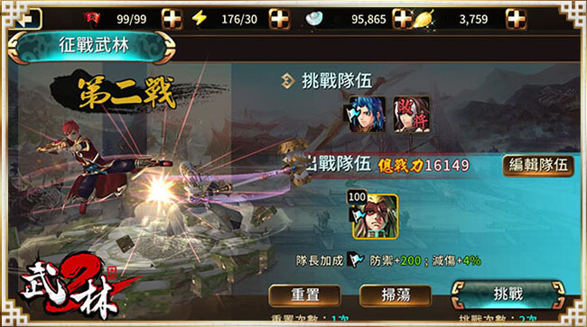

- 華麗3D戰鬥系統
- 俠客培育養成系統
- 國台語故事劇情配音
- 野外BOSS極限挑戰
- 多元化趣味性小遊戲
- 獨創俠客運鏢系統
- 進攻大都征戰武林
- 多人競技場引爆瘋狂
- 尋寶尋寶系統大作戰
- 幫會爭奪戰強者對決
- 全服享樂撼動天下丹
華麗3D戰鬥系統
真正台灣人做的武俠遊戲！
全新《武林2》手遊版在戰鬥方面使用高優質的３D華麗打擊感及生動的特效，展現多人戰鬥畫面，為遊戲增加不少亮眼色彩，初入江湖操作分為手動及自動，若使用手動方式可以透過點擊頭像的方式進行自由切換操作隊伍中的俠客，點擊畫面就可以進行移動，並且可透過技能快鍵來施展武學技能。
每個俠客都有獨自不同的武功，除了平常跟隨自動戰鬥之外，玩家也可以切換後確實操作其技能和移動，以應變各種戰況。
俠客任你搭配打造最強隊伍
玩家除了透過俠客的技能進行戰鬥之外，也能施展主角玄天祕卷來輔助戰鬥，玄天秘卷的技能更分為三大類：攻擊型、防禦型、輔助型，其各有不同的效果和技能，玩家最多可以帶3種技能出戰，技能可以加點解鎖和升級方式，玩家可能要考量俠客隊伍的需求進行來搭配點數。
主角也可以透過玄天秘卷來輔助戰鬥！
*此內容僅供參考，詳細遊戲內容依遊戲內為主。*
俠客培育養成系統
俠客分為五種階段：凡品、上品、極品、神品、傳說，俠客的培養為玩家戰力主要成長的方向，俠客可透過戰鬥、活動和經驗丹來提高自身等級，除了等級之外，培養主要分為升階、裝備、武學和秘傳丹藥幾種，俠客本身有4個主技能和2個被動技能可以使用，玩家可以設定3個主動技能上陣使用外，也能對武學進行培養，讓武學有更進一步的增長，玩家要掌握好獲得的資源來培養俠客，這樣才能更有效且快速的組織強力的隊伍陣容。
俠客培育養成記得至俠義鎮找NPC任君姿及徐彩依唷!
俠客會依照類型分為內外功攻擊為主類型外，也有細分攻擊和防禦型，以及持有不同的的武器：刀劍、重武、拳甲、槍棍，這些設定除了會影響到俠客的素質之外，也會影響到俠客技能和作戰方式。
撼動群俠力量 經典俠客重現!
俠客的獲得方式主要是透過直接獲得俠客或是俠客令碎片合成，俠客及俠客令可以在俠義鎮找武林大探索NPC徐彩依進行取得或是由江湖路關卡挑戰及活動方式獲得，擁有俠客令後可在俠義鎮的俠客總管NPC任君姿進行招喚，將有機會獲得各種俠客，並進而將喜愛的俠客進行升階，玩家可以依照自已的喜好自由打造出喜歡的俠客隊伍。
俠客的進階成長
*此內容僅供參考，詳細遊戲內容依遊戲內為主。*
國台語故事劇情配音
百分之分原汁原味台灣國產自製手遊，由台灣原製作團隊全新打造《武林2》手遊版，並搭配多位知名配音員，以生動的動畫配上國台語雙音將玩家帶入劇情，讓《武林2》的故事劇情更緊湊精彩。
精彩國台語雙語音故事劇情
全新《武林2》手遊，被選中的天選者們將穿越時空回到過去，神秘的黑衣人到底是從何而來? 玄天秘卷到底遺落何方？玄劍門、武林群英皮四大門派與元朝的紛爭糾葛將一一解開……
江湖路上闖關有好友拔刀相助，結交武林盟友一同帶領俠客闖蕩江湖，故事章節章章精彩，敘說著天選者為何穿越時空? 回到過去，加上生動的真人配音，讓您快速融入《武林2》手遊的故事情節裡，成為拯救武林萬中選一的主角！！
天選者們！你成為拯救武林萬中選一的主角！！
*此內容僅供參考，詳細遊戲內容依遊戲內為主。*
野外BOSS極限挑戰
在《武林2》開放的隨機事件中，可分為『村落守衛』、『魔王挑戰』、『市集劫標』三個故事情節，為玩家在江湖路上增添趣味玩法，當遊戲地圖上出現了小紅點，就代表有村民或市集遭襲擊搶奪，需要大俠們在限時時間內前往擊退這些BOSS，維護武林和平就交給大俠們了，若擊退野外BOSS，也將獲得豐富獎勵喔！
遊戲地圖上出現了小紅點了，快去拯救村民
野外隨機BOSS出現方式：
◆『村落守衛』：從江湖路一般劇情關卡將有機會觸發挑戰。
◆『魔王挑戰』：從江湖路第五章的修羅關卡開始，將有機會觸發挑戰。
◆『市集劫標』：從江湖路第一章的精英、修羅關卡開始，將有機會觸發挑戰。
在隨機事件BOSS出現時，遇到氣勢十足的神秘王 !!(驚
*此內容僅供參考，詳細遊戲內容依遊戲內為主。*
多元化趣味性小遊戲
在《武林2》遊戲當中，受到玩家喜愛的多元小遊戲活動，可以在俠義鎮找武智勇雙全NPC雲媚娘，玩家將挑戰手眼並用的極限，共分為百鍊成鋼、掌門拼酒、大俠好眼力、點我加衣等四種小遊戲，這四種小遊戲，各有不同的玩法操作，只要玩家在活動中順利闖關，就能獲得大量銀兩及特別稱號獎勵，簡單有趣的玩法，讓你體驗更多樂趣。
智勇雙全 大俠好眼力 考驗您的手眼靈敏
掌門拼酒小遊戲，秘訣將對應對酒杯送到掌門的手中
*此內容僅供參考，詳細遊戲內容依遊戲內為主。*
獨創俠客運鏢系統
在《武林2》手遊中裡，想要獲得大量金葉，可以選擇透過【運鏢】的方式來獲得。只要玩家角色等級達到32級之後，即可到大都生活區找尋玩命快遞NPC秋舞蝶進行運鏢活動，每天的鏢局任務種類繁多，每日至少可接九趟任務，並於清晨5點重置。
玩命快遞帶你玩【運鏢】【劫鏢】輕鬆獲得獎勵
俠客們可以選擇一個適合自己目前戰力的任務，挑選一至四位隊伍人選進行運鏢，不同的任務對應不同的獎勵，運鏢途中將經歷其他玩家劫鏢或眾多意外或，若能順利完成運鏢，就能獲得大量的銀兩及神裝材料…等獎勵。
玩家在運鏢過程中要小心敵人來劫鏢
*此內容僅供參考，詳細遊戲內容依遊戲內為主。*
進攻大都征戰武林
當等級達到22級就可以到大都生活區進行「進攻大都」及「征戰武林」
進攻大都：當等級達到22級，可以到大都生活區找極限挑戰NPC歐陽紫嵐，進攻大都共有100道關卡，玩家每天可以免費重置兩次關卡的機會，建議使用四大門派的俠客去奪回玄天神劍有額外攻擊加成能力，對於闖關也較容易，而每過一道關卡可以獲得各種材料等獎勵。
進攻大都挑戰每一關卡拿各種材料獎勵
征戰武林：當等級達到26級時，記得到大都生活區找極限挑戰NPC歐陽紫嵐，征戰武林中，共有60道關卡等著玩家來逐一挑戰，建議使用「玄劍門」和「武林群英」俠客出戰可獲得傷害加成，在戰鬥中玩家也是能使用玄天秘卷技能來幫打，而且只要戰鬥結束前俠客沒死，氣血就會回滿，玩家就能以滿血狀態來挑戰下一關，越後面的關卡難度越高，但能獲得的俠客技能升級重要材料獎勵也會越豐富。

建議每日必打征戰武林，將有機會獲得俠客技能升級必備的重要材料
*此內容僅供參考，詳細遊戲內容依遊戲內為主。*
多人競技場引爆瘋狂
當玩家角色等級達14級以上，可前往大都生活區找武道館NPC天刀柳預參加多人競技挑戰，而競技場大廳將依據俠客人數提供三人、六人、九人的競技挑戰。
在競技場中，玩家可從對方隊長頭像與戰力評估實力，進行俠客挑戰或是花費銀兩更換挑戰對象，只要挑戰成功，將有機會獲得提升俠客能力的貫化丹、俠客令碎片、綁定金葉等豐富獎勵及榮耀排名。此外，若能突破自身歷史最高排名，還能額外獲得超大量銀兩獎勵。
參加競技場條件：
◆3人競技場：角色達14級
◆6人競技場：角色達34級
◆9人競技場：角色達44級
３人、６人、９人競技場挑戰個人實力！
*此內容僅供參考，詳細遊戲內容依遊戲內為主。*
尋寶尋寶系統大作戰
尋寶爭奪最重要目的，就是透過尋寶或奪寶這兩種方式，來取得各種秘笈碎片或寶石碎片來加以合成，等級達16級時可以至俠義鎮找亂鬥江湖NPC瘋劍客參加尋寶及奪寶爭奪戰。
尋寶方面可以透過好友一起協助尋找秘笈和寶石碎片，若是想用搶奪方式可點選奪寶，挑選對象進行搶奪，在奪寶戰鬥中，玩家非常需要透過手動操控來戰鬥，是需要相當技術性的玩法，相對的獎勵獲得的機會也較高喔。

尋寶爭奪大作戰一起獲得秘笈和寶石碎片等獎勵
*此內容僅供參考，詳細遊戲內容依遊戲內為主。*
幫會爭奪戰強者對決
在全新《武林2》手遊中，玩家建立幫會後，幫會成員需齊心合力才能使幫會得到發展，幫會可以提供更多玩家之間的互動，透過玩家對幫會投資心力，可以額外獲得屬性加成和資源。
幫會戰準備開打，雙方虎視眈眈!!
幫會挑戰賽，玩法說明：每週一、三、五早上5點自動配對出當天的場次，晚上20:40~20:55為比賽時間。幫會需要2級以上才能進行撮合參加，且剛加入幫會24小時內的成員無法進行挑戰賽。勝利方將獲得「勝利獎賞」，敗方或平手雙方亦能得到「參與獎賞」。個人的力量很渺小，但群體的力量很強大，幫會的榮耀就靠成員們一同爭取，加緊腳步提升自己的角色，出戰對抗其他幫會，獲得更好的幫會評價和獎勵。

幫會戰開打囉!超刺激廝殺，雙方都使出大絕招想打倒對方
*此內容僅供參考，詳細遊戲內容依遊戲內為主。*
全服享樂撼動天下丹
只要玩家取得「撼動天下丹」，就可以到大都生活區點擊戰鼓放丹，玩家可以一次最多可以放20個撼動天下丹，除此之外，當玩家使用撼動天下丹後，其他玩家可以在60分鐘之內至大都生活區點擊戰鼓，進行「擂鼓助威」取得吸丹獎勵。其他玩家放多少撼動天下丹，玩家放越多丹，玩家就會取得越多個擂鼓袋，擂鼓袋跟撼動天下寶箱一樣都是可以抽取各種寶石與道具的好物品，所以「撼動天下丹」算是武林全民福利，就算玩家沒放丹，也可以一起分享吸丹的獎勵，並可以寫感謝文發送給放丹的大大們，這算是一人分享，全民享樂的物品。 撼動天下丹可以透過江湖追追追或跟大商鋪NPC 甄舞購買喔！
撼動天下丹全服享樂大福利
*此內容僅供參考，詳細遊戲內容依遊戲內為主。*
top

 返回首頁
返回首頁